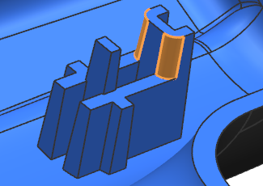
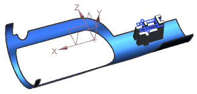
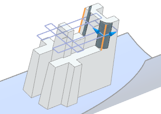
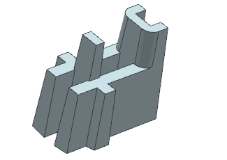
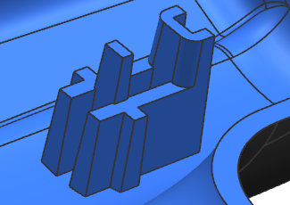

设计更改需要您添加倒圆角到当前部件中，您可以在完成的部件模块之后添加倒圆角，然后对部件的其余部分求和，您可能想要在部件模块中进行更改，以使特征包含在工作收集器中。

在部件导航器中，右击部件模块 “Heat Sink”并选择激活部件模块。
部件主体将被隐藏，并且部件模块现在变为当前特征，将显示输入以及工作收集器中的对象。

在如图所示的两条边上创建2 mm 半径的倒圆角。

在部件导航器中，右击部件模块 “Heat Sink”并选择停用部件模块。
部件模块仍然为当前特征。

在部件导航器中，右击求和 (27)并选择设为当前特征。

关闭所有部件。